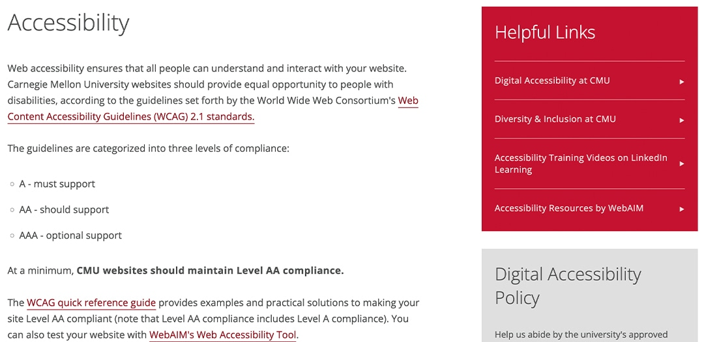
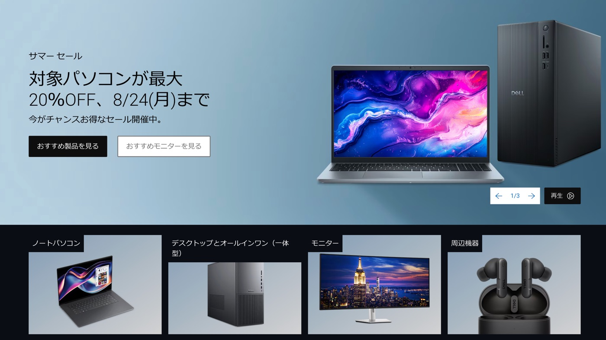
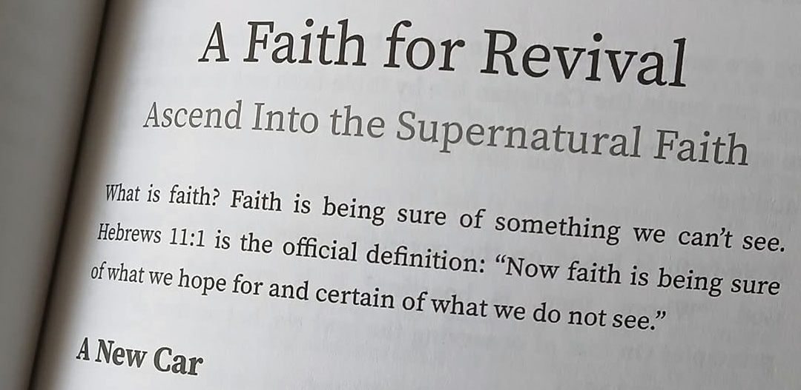

Steve here.
Design engineer, accessible UI & code, AI-augmented development.
Senior software engineer at Dell Technologies building A/B experiments on customer and business storefronts. I was lead engineer for the online experience of Dell's embargoed XPS relaunch. XPS was covered by Reuters and Ars Technica and sold out in two countries. Before Dell, I spent fifteen years at Carnegie Mellon University, where I designed the templates and brand standards shared by hundreds of university sites and wrote web accessibility guidelines still used today.
Fifteen Years of cmu.edu
Carnegie Mellon hired me in 2007 as the only web designer on its marketing team. The rest of the marketing team, from developers to videographers, shaped the work with me. The HTML, CSS, presentational JavaScript, and SVG animations came from me, along with accessibility and performance tuning.
The last homepage I worked on introduced the wordmark square: CMU's wordmark stacked inside a red square, pinned to the top-left corner. My early designs let it weave above and behind page elements as you scrolled. Leadership kept the square and its fixed corner perch but decided to cut the z-index cuteness.
CMU has since redone its homepage. But college, departmental, and admissions sites across the university still display some of my designs and code. A legacy for my alma mater.
University Design System
Carnegie Mellon staff and faculty have hundreds of websites: colleges, departments, research centers, admissions campaigns, each with its own authors and initiatives. I architected the CMS templates, authoring tools, and brand standards those sites shared.
Our team ran Agile, with a shared backlog of feature requests from CMS users across campus. We organized and ranked the backlog together, and I turned those requests into new template, design, authoring, and functionality solutions.
First in Cascade CMS, then in Drupal. Responsive layout and brand-aligned type and color. And accessible.
Back then, the term "design system" was just gaining popularity, but it was that: a set of components and rules, governed from one place, adopted across hundreds of sites.
Why the CMS Had to Change
Cascade CMS pushed static files, and we could not serve departments that needed dynamic pages or advanced automation. Marketing and IT evaluated many CMS vendors and landed on two finalists. Another developer from the marketing team and I audited them by hand, and our assessments helped shape the future of CMU's websites.
Moving 250 Sites
About 250 sites outgrew their design. We moved them to a design I created, which required much planning. I worked with full-stack developers to map old fields to new ones to hold the design together and preserve data integrity. Every site had different owners with different deadlines and priorities, so we got to coordinate rolling launches over the course of many months.
The XPS Relaunch
Dell relaunched its XPS laptops across multiple regions under embargo. Reuters, Ars Technica, and other national tech outlets covered the launch. I served as lead engineer for the online experiences that carried it.
An outside agency designed the campaign. My job was to make it real on Dell's site. The agency built its concept on GSAP, an animation library the team had never used, so I learned it while building with it. The pages shipped on time, and XPS sold out in two countries.
Accessibility Standards and Practice
At Carnegie Mellon, I wrote the web accessibility standards, built on research, an accessibility audit, and conference learnings. They still live on CMU's web branding site today. The Office of Accessibility and I ran workshops together; its leader showed staff what screen reader navigation feels like, and I presented the guidelines and the work behind them.
At Dell, I adapted the company's accessibility guidelines to A/B testing. One of the guidelines is that if the control is not accessible, do not fix it inside an experiment. This rule ensures that the tests measure what they are meant to measure and not something else.

Accessible Image Gallery
Carnegie Mellon hired an agency to redesign the Admission website. The agency designed a handsome gallery module and handed over flat comps: no interaction, no animation, no functionality, no accessibility. So I built it.
I pulled a JSON feed from CMU's Curator account, which gathered photos from Twitter and Instagram, then laid it out with CSS Grid in a custom Twig template. Each image revealed a caption on hover and focus, so keyboard users reached the same content as mouse users.
Experiments on International Storefronts
Dell runs A/B experiments on B2B amd B2C storefronts across regions including Japan, Europe, South America, and Canada. Dell.com sells to everyday customers. Premier is where companies log in and order. I build for both.
A variant starts with Figma designs or light documentation and a hefty list of metrics to capture. Sometimes important details hide until development, which requires consultations with product teams to clarify requirements and address oversights.
Defensive coding rules: confirm elements exist, wait for control to load certain elements or APIs, prefer CSS over JavaScript, trim every millisecond. Performance is everything.

The AI Code Review Workspace
An engineer on my team built an AI code review skill suite that underperformed. A colleague who knew I excel in AI-augmented dev asked if I could do anything about it.
I reworked the suite and added an accessibility review layer. I then moved the whole thing to a shared workspace inside Dell's internal AI tool. What had run as a local skill now runs as a shared tool nearly a dozen engineers use, and a colleague is extending it into CI/CD automation.
Experience Design Summit
I worked on Dell's Experience Design Summit, a global, livestreamed event, for several years in different capacities. At the last one, which drew 500-plus attendees and 50-plus speakers from teams across the globe, I served as co-chair.
Chairs plan the sessions, work with speakers and panelists, build the summit website, and handle whatever else the day throws at them. One session started with me backstage, checking that every speaker was ready. Lots of communication, often chaotic.
Books for Manifest Ministries
I am creative director for Manifest Ministries, the nonprofit teaching ministry of Pastor W. Joseph Stump, and I sit on its board. I design books, marketing assets, signage, and the website.
I devised the brand guidelines, color scheme, and typographic style. For ease, shareability, and editability, I lay each book out in Google Docs. The manuscripts arrive as Word documents formatted with little consistency. So I built my own Claude skill that turns messy Word docs into clean Markdown files, ready to import into Google Docs. I photographed the two most recent book covers.

Patent Pending
I keep up with changing tech and ideate with like-minded engineers. At Dell, many of my ideas have gone to the patent committee, and one went to the lawyers. Patent pending for a media file retrieval method and AI-driven UX workflow that I co-invented.
Anybody who has hunted through a media library knows the problem. Thousands of unorganized files, and the one you need is in there somewhere but impossible to find. This novel technique helps solve that problem.
I work beside smart people, some inventors. I did not see this as part of my career trajectory, a true blessing.